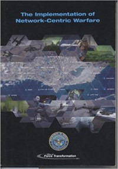

Summary
The Implementation of Network-Centric Warfare is written by the Department of
Defense which focuses on the current applications and implementations of network-centric
warfare (NCW). Network-centric warfare is an emerging theory of war which dictates that a
connected network allows for shared information, faster communication and action, and higher
chances of success due to coordination. To operate effectively against such a network, the
military must now focus on an entire system instead of focusing on an individual threat. This
shift in warfare has led to a greater focus on information and cybersecurity. These networks rely
heavily on gathering as much data and information on the enemy as possible to gain an
advantage while also attempting to ensure that the enemy cannot gather data that could be used
to gain an advantage. This book is important because it describes network-centric warfare and
outlines how our military uses it to gain an advantage.